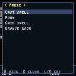
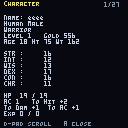
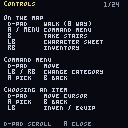

01What this is
Moria is the ancestor. Angband is its child; every "go down, get loot, come back up" game owes it something.
You make a character, buy what you can afford in a small town, and walk down a staircase. The dungeon is generated fresh each time and it does not care about you. Death is permanent. The goal, fifty levels down, is the Balrog — almost nobody gets there, and that is rather the point.
This is the real thing: the original C source, its dungeon generator, its monster list, its item tables and its combat maths, compiled for the Thumby Color. Nothing was simplified to fit. What changed is how you talk to it.



02The buttons
Moria has a verb for nearly everything and expects a keyboard. Rather than fake one, the game tells the handheld what sort of answer it is waiting for, and you get a screen built for that answer. You are never hunting for a letter.
Walking around
| Button | Does |
|---|---|
| D-pad | Walk, eight ways. A tap is one step; hold to keep going. |
| A | Open the command menu. |
| MENU | Also the command menu. |
| B | Take the staircase you are standing on. |
| LB | Character sheet. |
| RB | Inventory. |
When the game asks you something
| It wants | You get | Buttons |
|---|---|---|
| A command | Six categories of verbs | LB/RB category · D-pad move · A pick · B back |
| An item | Your actual inventory, by name | D-pad · A pick · LB swaps worn/carried |
| A direction | A compass | D-pad · A for "here" · B cancel |
| Yes or no | A prompt | A yes · B no |
| One of a list | Race, class, spell, shop stock | D-pad + A · hold RB to peek behind |
| Your name | An on-screen keyboard | A type · LB delete · RB accept |
| You to read a message | -more- | any button |
All of this is in the game too, under Info → Controls. You never need this page at the table.
03The command menu
Thirty-nine verbs, sorted into six categories. LB and RB move between categories.
Magic
Cast spell · Pray · Gain spell · Browse book. Mages cast, Priests pray, and both must learn from a book first.
Use
Eat · Quaff · Read · Aim wand · Use staff · Fuel light. Reading needs light and literacy; blind or confused, you cannot.
Gear
Wield/Wear · Take off · Drop · Throw/Fire · Inventory · Equipment · Swap weapon · Inscribe.
Act
Open · Close · Disarm · Bash · Tunnel · Spike door · Search once · Search mode · Look · Identify symbol.
Go
Up stairs · Down stairs · Rest. Resting passes time to heal — it is interrupted the moment anything appears.
Info
Character · Controls · Locate map · Options · Licence · Save game · Quit.
Careful: Quit sits in the same menu as Save game, and in Moria quitting means your character dies for good. Read the highlight before you press A.
04Making someone
Pick a race, a sex, and a class; the game rolls six stats and you accept them or roll again. Then you name them, and they are yours until something kills them.
The eight races
| Race | Roughly |
|---|---|
| Human | No bonuses, no penalties, fastest to level. The honest choice. |
| Half-Elf | A little quicker and wiser than a human, a little frailer. |
| Elf | Clever and perceptive, physically slight. Good at magic. |
| Halfling | Very dextrous, very stealthy, very weak. Superb rogues. |
| Gnome | Smart and sneaky, poor fighters. Natural mages. |
| Dwarf | Tough and strong, blunt of mind, cannot be blinded. |
| Half-Orc | Strong, ugly, resilient. A blunt instrument. |
| Half-Troll | Enormously strong and slow to learn. Enormous hit points. |
The six classes
| Class | Plays like |
|---|---|
| Warrior | Hits things, survives being hit. No magic at all, and none needed early. The right first character. |
| Mage | Fragile, and the strongest thing in the game if it lives. Magic Missile until it does not work, then something better. |
| Priest | Prays rather than casts, heals itself, fights adequately. The forgiving caster. |
| Rogue | Stealth, traps, locks, and a little magic. Steals from monsters and avoids fights it cannot win. |
| Ranger | A fighter who shoots and casts a bit. Bows are quietly one of the best things in Moria. |
| Paladin | A warrior who prays. Slow to level, hard to kill. |
First time? Human Warrior. Accept the stats. Walk into the General Store, buy Flasks of Oil, and throw them at anything frightening.
05The town
You start above ground with a little gold. Six shops, each a numbered door you walk into. Sell what you find, buy what keeps you alive.
| Shop | Worth your money |
|---|---|
| General Store | Food, torches, oil flasks, cheap arrows. Never leave without food. |
| Armory | Body armour, shields, helmets. Heavy armour slows a spellcaster. |
| Weaponsmith | Blades, blunts, bows and ammunition. |
| Temple | Priest books, healing potions, blunt weapons. |
| Alchemy shop | Potions and scrolls. Cure Light Wounds, always. |
| Magic Shop | Mage books, wands, staves, rings and amulets. |
Shop stock rotates. If the thing you want is not there, go down a level, come back, and look again.
06Staying alive
Light is everything
Torches and lanterns burn down. In the dark you cannot read scrolls, you cannot see what is hitting you, and you will die to something you never saw. Carry spares, and Fuel light before it matters.
Descend slowly
Depth is difficulty. One level at a time, and clear it before you take the stairs. The dungeon regenerates every time you change level, so there is no cost to being thorough — only to being greedy.
Run away
Moria will happily generate something you cannot beat. Nothing forces you to fight; stairs are an escape, and a scroll of Phase Door is cheaper than a funeral.
Read the log
Two lines under the map are the only place the game explains itself — what hit you, for how much, what your spell did. Everything you need to make the next decision is written there.
Unknown things are dangerous
An unidentified potion may heal you or may blind you in a corridor with something hungry in it. Test unknowns in a cleared room, not mid-fight.
Save often, but understand what saving is
Info → Save game stores your character and closes the game; starting Moria again resumes exactly there. It is a bookmark, not a checkpoint — if you die, the save dies too. That is the genre.
07Whose game this is
Moria was written by Robert Alan Koeneke in 1983. James E. Wilson made it portable as Umoria, and David J. Grabiner maintained it and released 5.6.0.
Copyright © 1989–2008 James E. Wilson, Robert A. Koeneke, David J. Grabiner
Umoria is free software under the GNU General Public License, version 3 or later, and so is this port, in whole. It comes with absolutely no warranty. The licence is in the game under Info → Licence, and in full at games/moria/COPYING.
The complete corresponding source — the Umoria core and everything written to put it on this handheld — is at github.com/austinio7116/mote under games/moria/. Upstream Umoria lives at dungeons-of-moria/umoria.
This port is not affiliated with or endorsed by the original authors. The port itself — the controller-native interface, the virtual terminal, the fiber, the colour — is by austinio7116.